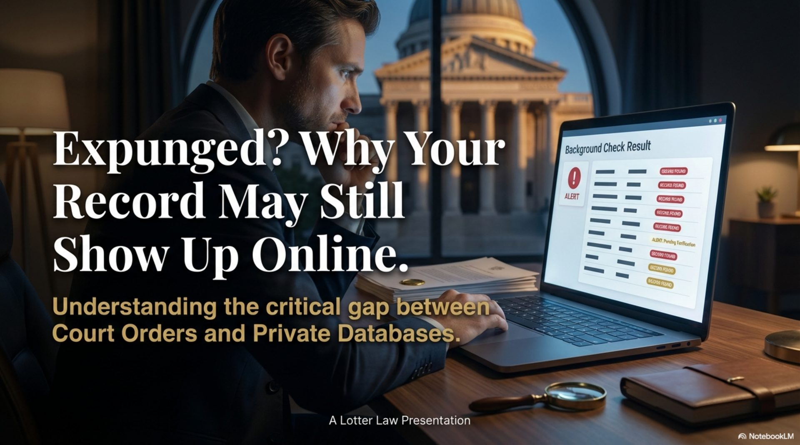

Expunged Your Record? It May Still Show Up Online

You paid the fees. You waited months. The court granted your expungement. You legally can answer "no" when asked if you've been arrested. But then you run a background check on yourself, and there it is—your arrest record, still online.
This is one of the most frustrating gaps in Florida's expungement system. Here's why it happens and what you can do about it.
What Expungement Actually Does
Florida law allows you to expunge (completely destroy) or seal (hide from public view) certain criminal records. For a full overview of the process, see our guide on sealing and expunging criminal records in Florida. Under Florida Statutes §943.0585 (sealing) and §943.0581 (expungement), the court orders all government agencies to:
- Remove the record from public databases (FCIC/NCIC)
- Mark files as "confidential and exempt"
- Not disclose the record without a court order
- Physically destroy (expungement) or archive (sealing) court files
What This Means for You
- Law enforcement cannot see your expunged record (with exceptions)
- Florida courts cannot access it
- State licensing boards cannot see it
- You can legally deny the arrest ever happened in most situations
This is powerful protection—but only against government records.
The Private Database Problem
Here's the catch: private companies are not required to delete records they obtained before your expungement.
When you were arrested, your information became public. Within hours, it was:
- Posted on the sheriff's website
- Scraped by background check companies (LexisNexis, CoreCivic, Checkr, etc.)
- Uploaded to mugshot websites
- Indexed by Google
- Sold to data brokers
The Timing Problem
Private companies archive public records daily. Once they have your arrest record in their database, a court order months or years later doesn't automatically erase it. They captured a "snapshot" of public information when it was still public.
What Shows Up After Expungement?
Even with a successful expungement, you may still find:
Common Lingering Records
- Commercial background checks: Companies like LexisNexis, Accurint, and TLO maintain historical archives
- Mugshot websites: These profit-driven sites often ignore removal requests
- News articles: Local news coverage is protected by First Amendment; expungement doesn't require removal
- Court docket aggregators: Sites like UniCourt and Justia archive court filings before expungement
- Cached Google results: Even if the source page is removed, Google may cache old results temporarily
Florida's Mugshot Removal Law (F.S. 901.043)
Florida does have a law requiring certain removals. Under F.S. 901.043, commercial websites must remove booking photos for free if:
- Your case was dismissed or nolle prossed
- You were acquitted
- You completed pretrial diversion
- Your record was sealed or expunged
This applies specifically to mugshot publication websites, not all background check databases. And even then, compliance is inconsistent.
Fair Credit Reporting Act (FCRA) Protections
The federal Fair Credit Reporting Act (15 U.S.C. §1681 et seq.) provides some protection for background checks used for employment purposes:
FCRA 7-Year Rule
Consumer reporting agencies generally cannot report:
- Arrests that did not lead to conviction if more than 7 years old
- Civil suits, judgments, and paid tax liens over 7 years old
Exception: This does NOT apply if the position pays over $75,000 or involves certain sensitive roles.
However, many background check companies violate FCRA by reporting expunged or old arrests anyway. You have the right to dispute inaccurate reports.
Practical Steps After Expungement
Expungement is the first step, not the last. Here's how to address lingering records:
Post-Expungement Cleanup Checklist
- Google yourself: Search your full name + "arrest," "mugshot," "booking," and variations
- Request mugshot removal: Email each site with proof of expungement per F.S. 901.043
- Dispute background checks: Order a copy of your consumer report and dispute any mention of expunged records
- Contact data brokers: Submit removal requests to major aggregators (opt-out links usually available)
- Request Google de-indexing: Use Google's "Remove outdated content" tool for cached results
- Monitor regularly: Set up Google Alerts for your name to catch new appearances
- Consider reputation management: Professional SEO services can suppress negative results
What If They Refuse to Remove It?
If a commercial website refuses to remove your booking photo after you've provided proof of expungement, you have legal recourse:
- File a complaint with the Florida Attorney General: F.S. 901.043 violations can result in civil penalties
- Dispute with credit bureaus: If the record appears on an employment background check, dispute it as inaccurate under FCRA
- Consider legal action: You may have a private right of action for FCRA violations (including damages)
- Document refusals: Keep records of all removal requests and responses for potential enforcement
Sealing vs. Expungement: Does It Matter for Private Databases?
Both sealing and expungement trigger the same F.S. 901.043 removal rights for mugshot websites. However, there are differences:
Key Differences
- Expungement: Record is physically destroyed by government agencies (stronger protection)
- Sealing: Record still exists but is confidential and exempt from public access
For private databases, the practical difference is minimal—both give you the legal basis to demand removal from mugshot sites and dispute background checks. And remember: a withhold of adjudication can preserve your eligibility for sealing even if you have prior history.
Employment Background Checks: What to Expect
If you've successfully expunged your record and cleaned up online sources, what will employers see? (For more on this topic, read Do I Have to Tell My Employer I Was Arrested?)
What Should Appear
- FDLE background check (fingerprint): Will show "no record" for expunged arrests
- Court records search: Should return no results (record is sealed/destroyed)
- FCRA-compliant reports: Should not include expunged records
What Might Still Appear (Requires Dispute)
- Non-compliant background check companies showing archived data
- Internet search results (Google) showing cached pages
- News articles mentioning your name (protected by First Amendment)
Why This System Is Broken (And What's Being Done)
Many advocates argue that expungement should automatically trigger removal from all databases, public and private. The current system places the burden on individuals to chase down dozens of websites.
Some states (like California and New York) have stronger data privacy laws that require private companies to delete records upon expungement. Florida has not yet adopted such comprehensive protections, though F.S. 901.043 is a step in that direction.
Common Myths About Expungement
Myths vs. Reality
- Myth: "Expungement makes my arrest disappear from the internet instantly." Reality: You must manually request removal from private websites.
- Myth: "Background check companies automatically update their databases after expungement." Reality: You must dispute reports showing expunged records.
- Myth: "I can sue news outlets for publishing my arrest record." Reality: News reporting is protected; expungement doesn't require removal of truthful published articles.
- Myth: "Once expunged, no one can ever find out about my arrest." Reality: Some entities (law enforcement, certain employers) can still access sealed records with authorization.
Bottom Line
Expungement is powerful—it removes your record from government databases and gives you the legal right to deny the arrest. But it's not magic. Private companies that archived your record before expungement may still have it.
The good news: Florida law (F.S. 901.043) and federal law (FCRA) give you tools to fight back. With persistence, you can remove most lingering traces of your expunged record.
Work with a defense attorney who understands that clearing your record is only the beginning—protecting your online reputation is the rest.
Related Articles
Clear Your Criminal Record in Florida
Complete guide to sealing and expunging criminal records under Florida law.
Do I Have to Tell My Employer I Was Arrested?
Your rights regarding arrest disclosure to employers in Florida.
New Year, New You: Clear Your Record in 2026
Why now is the right time to pursue expungement or sealing in Florida.
Prior Convictions Don't Block a Withhold in Florida
How withholding adjudication preserves your eligibility for record sealing.
Eligible for Expungement in Florida?
Clearing your record from court files is step one. Let's help you understand your eligibility and plan for complete reputation recovery.
Free Consultation: 407-500-7000